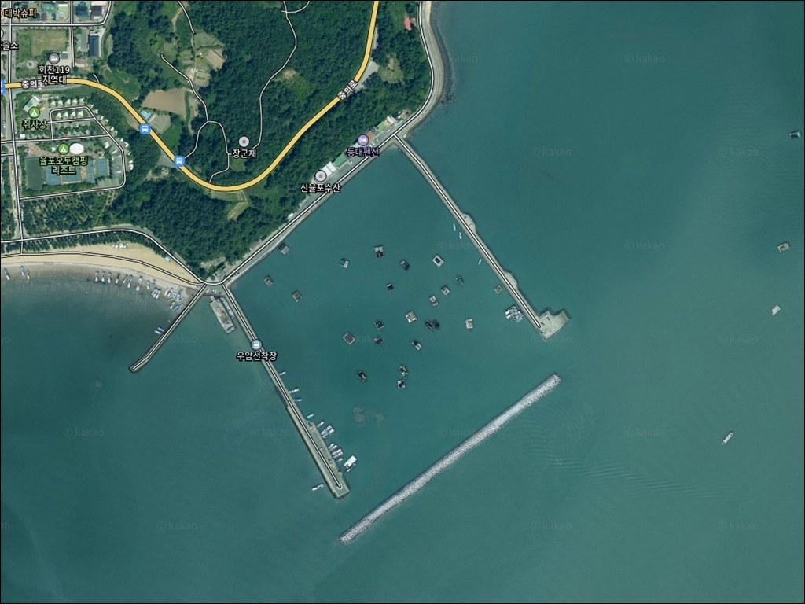
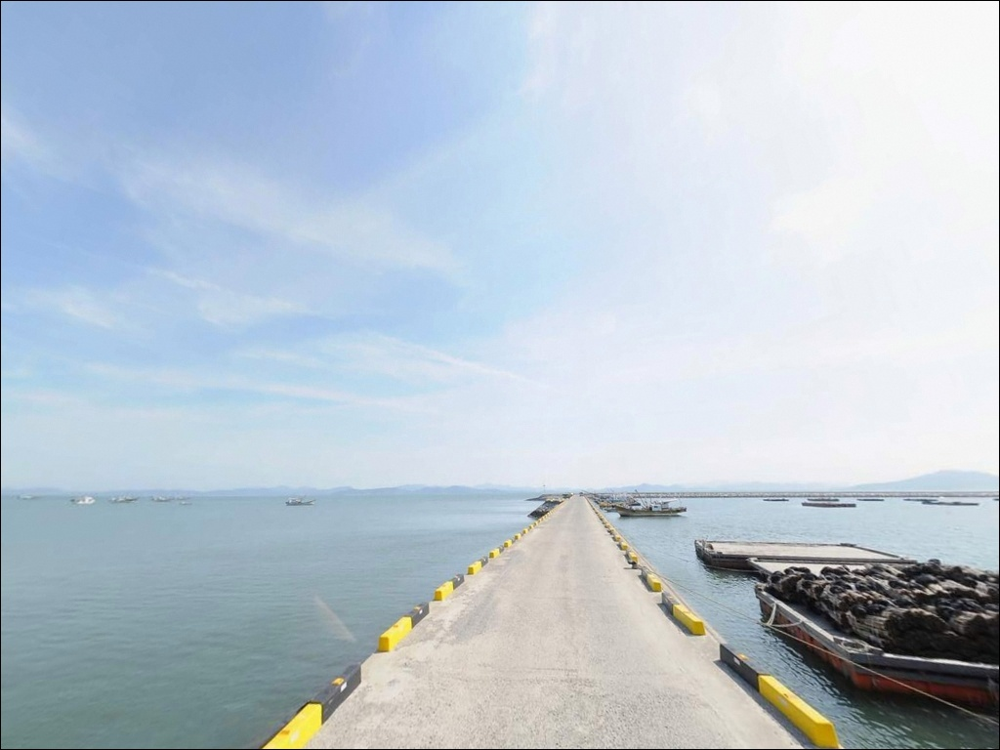
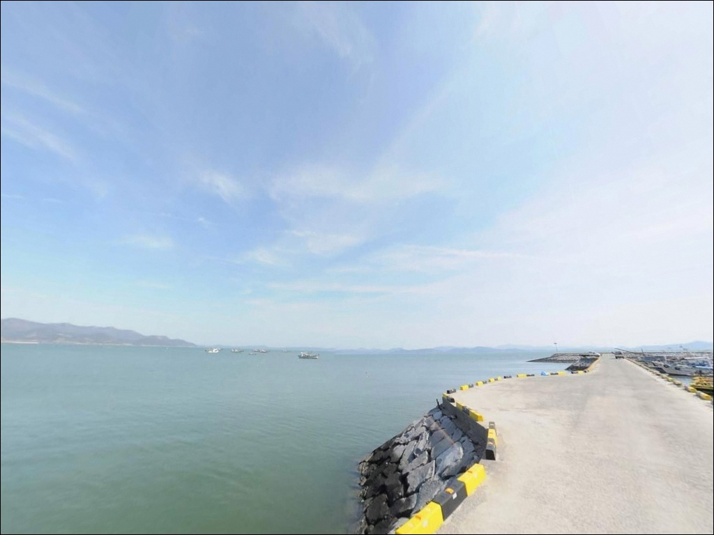
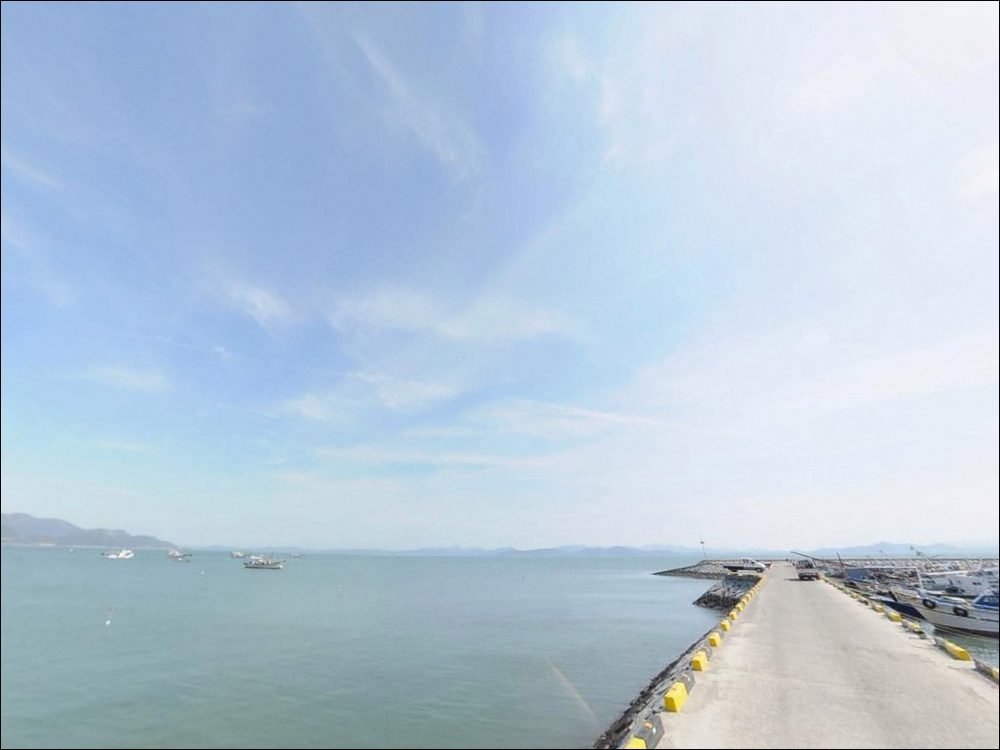
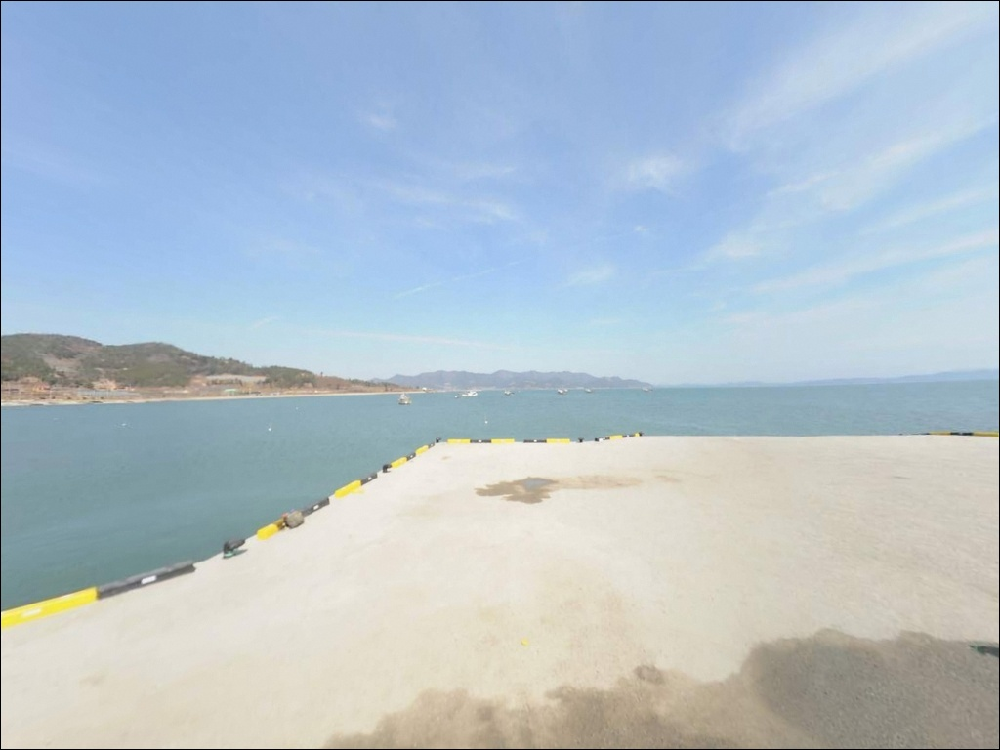
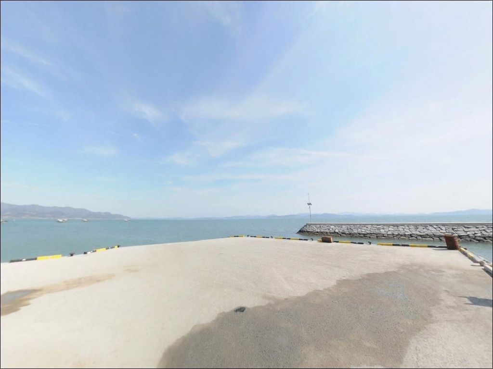
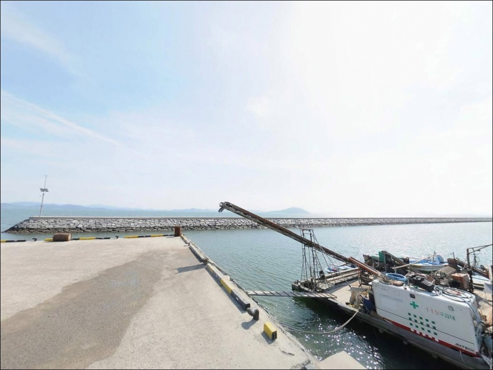
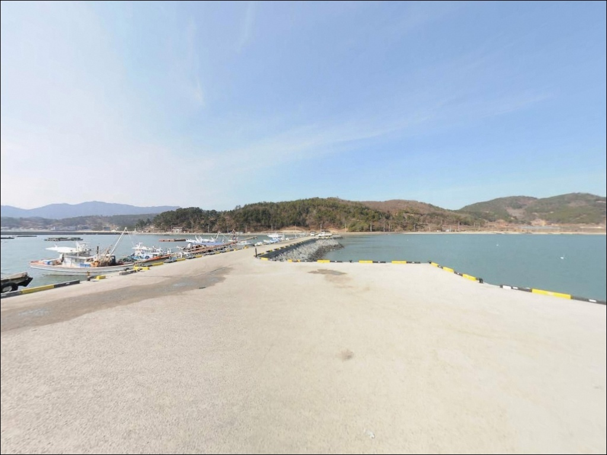
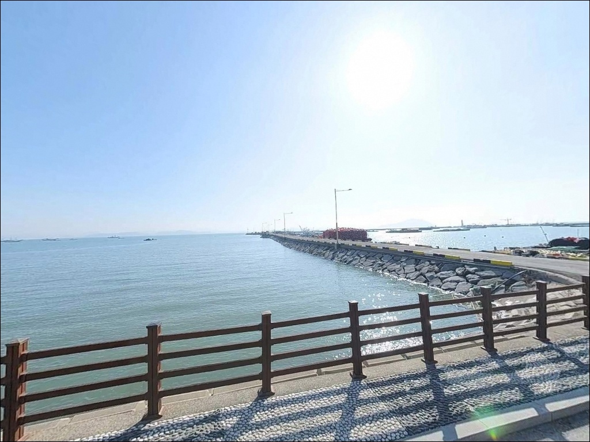

동율항, 우암선착장, 전남 보성군 물고기 잘 잡히는 방파제 차박 낚시터 추천
이 페이지에는 광고(제휴 링크 포함)가 있으며, 광고 링크를 통해 구매하면 운영자가 판매 수익 또는 수수료를 받을 수 있습니다. 포인트 사진: 카카오맵 스카이뷰·로드뷰. 이 페이지의 지도·사진 이미지는 카카오맵의 실제 서비스 이미지와 다를 수 있습니다.


포인트 안내
동율항(우암선착장)
전남 보성군 회천면 동율리 503-30
득량만 내만 깊숙이 자리한 이 선착장은
간조 시 수심이 1m 이하로 떨어지는
조간대 갯벌형 지형입니다.
물때를 확인하지 않고 내려간다면
낚시 채비를 펼치기도 전에
갯벌이 드러난 바닥만 보게 되는 상황이
생길 수 있습니다.
2003년 어촌정주어항으로 지정된
동율항은 율포해수욕장 동단과 맞닿아 있으며,
파도 영향이 적은 잔잔한 수역과
원투낚시에 어울리는 펄 저질 바닥이
이 포인트의 핵심 특성입니다.
등대 조명이 있어 야간 낚시 접근도
가능한 구조입니다.
이 글은 동율항(우암선착장)의
진입 환경, 차박 여건, 물때 판단 기준,
낚시 스타일별 공략 조건에 집중합니다.
조황 단정이나 특정 어종 보장은
이 글의 범위에 포함되지 않습니다.

1. 진입 동선과 포인트 접근성
율포해수욕장 방향 진입 도로를 따라
동율항까지 포장도로가 이어집니다.
급경사나 비포장 구간이 없어
승용차는 물론 캠핑카 진입도 무리 없는 구조이며,
선착장 끝부분에서 차량 회차도 가능합니다.
초행길이라면 율포해수욕장을 기점으로 잡고
해안선을 따라 진입하는 동선이 직관적입니다.
주차 후보지는 세 곳으로 나뉩니다.
율포해수욕장 대형 주차장이 약 300m 거리로
가장 규모가 크고 안정적입니다.
선착장 바로 옆 포구 공간도 활용 가능하며,
해수욕장 동단 방파제 인접 노상
역시 소형 차량 기준으로 선택지가 됩니다.
성수기에는 율포 일대 주차 포화가
발생하므로 이른 시간 진입을 권합니다.
선착장 발판은 이끼 낀 콘크리트 구조물로
물기가 있을 때 미끄럽습니다.
야간 낚시라면 미끄럼 방지 기능이 확실한
낚시화를 신고 진입하는 것이 기본입니다.

2. 차박 환경과 야간 체류 여건
동율항 일대는 율포해수욕장 동단과 바로 맞닿아 있어
완전한 고립형 포인트가 아닙니다.
민가와 관광 인프라가 함께 분포하는 혼합 지역이라
차량 통행과 인적이 어느 정도 존재하는 환경입니다.
성수기를 제외한 시기에는
프라이버시 면에서 비교적 양호한 편입니다.
등대 조명이 있어 완전한 암흑 환경은 아니며,
해수욕장 구역 쪽으로 야간 조명이 형성되어 있습니다.
내만 구조라 너울·파도의 직접 영향이 적어
차 안에서의 야간 체류 안정감은 좋습니다.
바람은 득량만 해풍 영향을 받는 구조로,
기상 악화 예보가 있다면 당일 일기 예보를
다시 확인하고 출발하는 것이 원칙입니다.
율포해수욕장 대형 주차장을 베이스캠프로 삼으면
선착장이 복잡할 때도 도보 이동으로 낚시를 이어갈 수 있어,
차박과 낚시를 병행하는 운용이 효율적입니다.
율포오토캠핑리조트(회천면 충의로 52)가
반경 3km 이내에 있어 정식 캠핑 시설로의
전환도 가능하며, 사전 예약이 필요합니다.


3. 주변 편의시설 및 인프라 현황
반경 3km 이내에 율포시가지 방향으로
편의점과 식당이 분포하며,
회천수산물위판장에서 현지 수산물 구매가 가능합니다.
율포해수녹차센터가 동율리 일대에 있으며
방문객 편의시설을 운영합니다.
식사·간단한 물품 보충은
차량으로 짧게 이동하면 해결되는 수준입니다.
반경 10km 권에는 보성읍 시가지에
병원, 약국, 24시 편의점, 대형마트가 있습니다.
응급 상황 대비는 출발 전
비상약품과 충분한 수분을 차에 갖춰두는 것으로
기본 준비를 마치는 편이 좋습니다.
연료도 율포 방향에서 미리 채우고 진입하는 것이
안전합니다.

4. 진입 전 반드시 챙겨야 할 준비사항
동율항 방문 전에 가장 먼저 확인할 것은
물때입니다.
선착장 끝단은 만수 전후 2~3시간이
실질적인 낚시 유효 시간대입니다.
간조 시 수심이 1m 이하로 낮아지는
조간대 갯벌 구조이므로,
들물 이후 만조 전후를 맞춰
도착 시간을 설정하는 것이 기본 전략입니다.
바다타임에서 보성 회천 기준 물때를 확인하고
출발 시각을 역산하는 과정이
이 포인트에서 조과를 결정짓는
가장 중요한 사전 작업입니다.
썰물이 진행 중인 상황에서는
갯벌에 채비가 닿거나 수심이 너무 얕아지므로
조류 방향 변환 타이밍을
사전에 파악해두는 것이 좋습니다.
선착장은 어업 활동이 이루어지는 공간입니다.
어선 이동 동선과 계류 로프에
채비나 차량이 방해가 되지 않도록
자리를 잡는 것이 기본 매너입니다.
야간에는 헤드랜턴과 구명조끼를
반드시 갖추고 입장합니다.

5. 득량만 내만에서 원투낚시 조과가 달라지는 조건
동율항(우암선착장)의 지형적 핵심은
득량만 내만 만입부 구조입니다.
외해 노출이 없어 파도와 너울의
직접 영향을 받지 않는 잔잔한 수역이며,
선착장 앞쪽으로 펼쳐진 바닥은
니사질(펄+모래 혼합) 위주의
완만한 경사 지형입니다.
선착장 구조물 주변에는 석재·콘크리트가
인공 어초 기능을 하며,
들물 때 조류가 이 구조물 주변을 타고
흐르는 패턴이 형성됩니다.
갯벌 경계부와 수로 합류 지점이
원투낚시의 주요 노림목이 되며,
선착장 끝단에서 정면 득량만 방향
원거리 캐스팅이 이 포인트에서 가장 효율적인
접근 방식입니다.
조류는 득량만 창조류·낙조류의 영향을 받아
들물 시 안정적인 흐름이 형성됩니다.
조류가 약해지는 정조 직전 타이밍에는
입질이 집중되는 경향이 있어
정조 전후 30분 구간을 주목할 필요가 있습니다.
최신 조황은 출조 전 반드시 검색해 보시기 바랍니다.


6. 포인트에 어울리는 낚시 스타일
이 포인트에서 가장 어울리는 낚시는
원투낚시입니다.
선착장 끝단 및 측면에서 부채꼴로
캐스팅하면 갯벌 경계선 너머
바닥층 어종을 노릴 수 있는 구조이며,
이 일대 해역에서 기대해 볼 수 있는 어종은
붕장어, 도다리, 보리멸, 숭어 계열입니다.
릴찌낚시도 이 포인트 구조에 잘 맞습니다.
들물 타이밍에 조류를 타고 찌를 흘리는 방식으로,
계절별 회유 어종이 합류하는
내만 특성을 활용한 접근입니다.
전어가 시즌 어종으로 알려진 해역으로,
가을 시즌에는 찌낚시 운용이 효과적입니다.
선착장 발판 바로 아래 석축 틈을 노리는
민장대 활용도 만수 시 유효합니다.
구조물 주변에서 망둥어, 볼락, 감성돔 치어 등
소형 어종의 입질을 기대할 수 있습니다.
야간 만수 시에는 갑오징어 에깅도
선착장 외벽을 따라 시도해 볼 수 있는
조건부 방식으로 활용됩니다.

7. 대안 포인트와 플랜 B 동선
동율항 조류 조건이 맞지 않거나
주차 여건이 여의치 않을 때
가장 먼저 이동할 곳은
회천방파제입니다.
약 1km 거리로 같은 득량만 내만 해역에 있으며,
방파제 구조로 발판 환경이 안정적이고
바다타임에 등록된 포인트로
조황 정보 접근도 수월합니다.
율포방파제는 약 0.9km 거리로,
규모가 더 크고 외항 테트라포드 구간에서
낚시 공략이 가능합니다.
동율항에서 입질이 없을 때
이동 거리가 짧아 플랜 B로 묶어서
두 포인트를 세트로 탐색하는 방식이
이 권역에서 효율적인 동선입니다.
보성 득량만바다낚시공원이 약 6~8km 거리에 있으며,
유료 체험낚시 시설로 운영됩니다.
연동부근해안(5.5km), 옥섬방파제(5.9km)도
같은 해역 연장선에서 활용 가능한 포인트입니다.
차박 대안으로는 율포솔밭해수욕장 솔밭 주차장이
캠핑카와 루프탑 모두 진입 가능한
가장 가까운 대형 차박 베이스입니다.

물때 맞추면 조용한 내만,
보성 득량만 차낚 포인트로 활용할 수 있습니다
물때를 맞춰 들물 이후 만조 전후에 자리를 잡는다면
동율항(우암선착장)은 원투낚시부터
찌낚시, 민장대까지 복수의 방식을
부담 없이 운용할 수 있는 포인트입니다.
파도 영향이 적어 악천후가 아닌 한
비교적 안정적인 낚시 환경을 유지하며,
인근 율포 상권과 가까워
완전 자급 체제가 아니어도
부담 없이 접근할 수 있습니다.
반면 간조 시간대에 방문하거나
물때 확인 없이 진입하면
낚시 자체가 불가능해지는 상황을
맞닥뜨릴 수 있습니다.
물때 확인, 성수기 주차 사전 계획,
슬로프 미끄럼 방지 장비,
이 세 가지를 갖추고 가는 것이
이 포인트를 제대로 쓰는 방법입니다.
율포해수욕장과 솔밭 주차장을 베이스로 삼고
낚시와 하룻밤 차박을 엮는 여정이라면,
득량만 내만이 선물하는 조용하고
잔잔한 하룻밤을 제대로 즐길 수 있는 곳입니다.